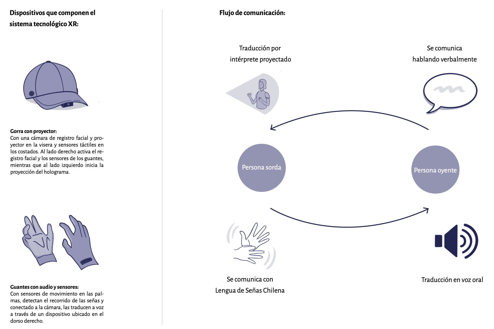
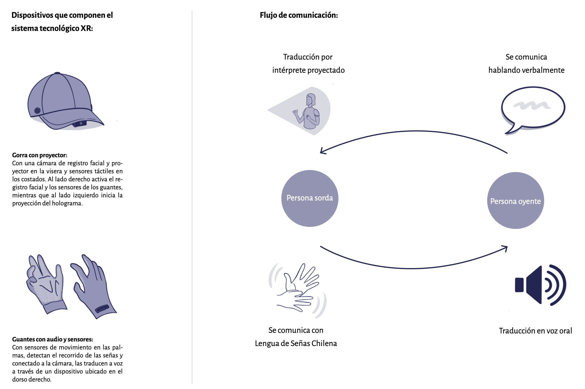

Presencia del Habla Signada
Proyecto del Taller de Diseño de Interacción 2025. “Presencia del Habla Signada” es una propuesta especulativa que busca visibilizar la Lengua de Señas Chilena (LSCh) mediante un sistema de tecnología XR que traduce las señas en voz y proyecta un intérprete holográfico. La propuesta busca ampliar la comunicación en espacios públicos, promoviendo el uso de la LSCh más allá de los subtítulos.
Ver proyecto en WikiCasiopea: Ir a la wiki
 
